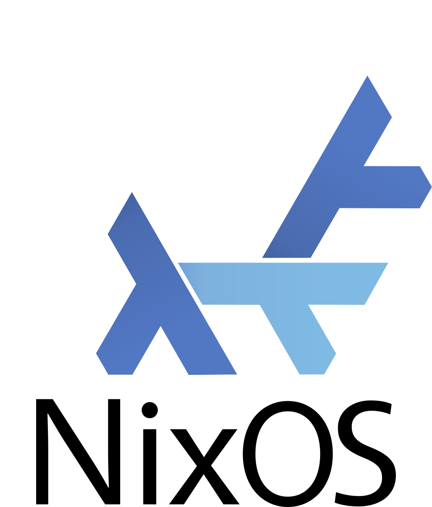
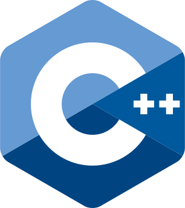
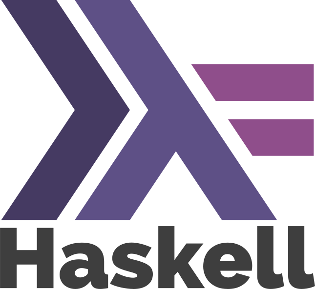
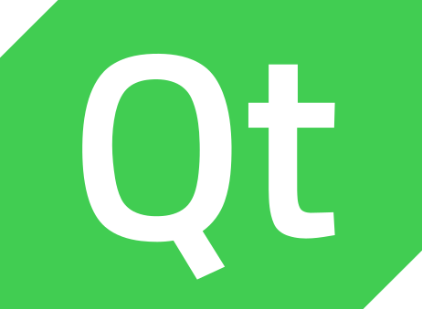
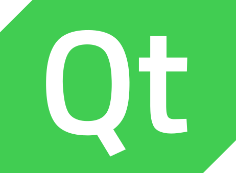
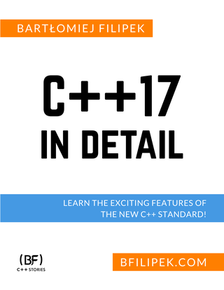
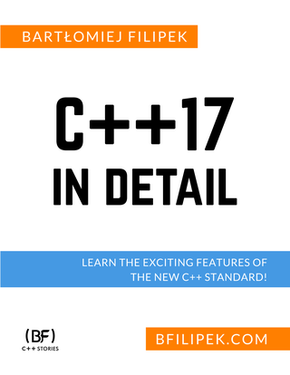

About Jacek Galowicz
I am a freelancer with professional interests in software development, software architecture, interface design, and continuous integration & deployment (CI/CD, DevOps). Over the years I got into bigger and bigger production projects and developed a lot of competence in how projects should be structurally built, integrated, and tested to enable and maximize the developer’s ownership of the overall quality of the resulting product.



 

 

Teaching & Publications
- I give talks and trainings on the topics of C++, Nix, Software Architecture, Build Systems, Automation of Builds, Integration, Tests, and Deployment of Software.
- I give a university lecture on software quality for Master students every winter semester at the FH Münster.
- I am the author of the Book C++17 STL Cookbook.
- Editor of the Book C++17 in Detail.
- Author/Co-Author of Cyberus Technology Blog posts about Intel CPU
vulnerabilities:
Meltdown, Spectre V4, Intel LazyFP Vulnerability, L1 Terminal Fault Vulnerability, Zombieload, TSX Asynchronous Abort - Co-Author of the scientific paper “Combining Mechanized Proofs and Model-Based Testing in the Formal Analysis of a Hypervisor”, FM 2016: Formal Methods
- Co-Author of the scientific paper “Efficient Implementation of the bare-metal Hypervisor MetalSVM for the SCC”, 6th Many-core Applications Research Community (MARC) Symposium
Software Development & Architecture
- Mainly C++ and Haskell Development on Linux
- I love meta programming/type-level programming to define error states/inputs out of existence (C++ Template Meta Programming)
- Deployment of services on x86-64 and ARM (Raspberry Pi) hosts
- Backend Services
- REST Interfaces
- PostgreSQL databases
- Frontend
- React applications, implemented in Purescript
- Desktop applications with Electron.js
- Qt Framework for embedded apps
- I am the maintainer of the Python NixOS Integration Test Driver portion of the nixos/nixpkgs Project on GitHub
Work Background
- Since 2018: Visiting Lecturer, FH Münster, Münster, Germany
-
I hold the lecture “Quality-Assuring Software Engineering Methods“ for master students every winter semester, which is about unit & integration testing, spec-driven testing, fuzzing, reproducibility, development processes in teams, bad established practices in the industry, etc.
- Since 2017: Co-Founder/Shareholder of Cyberus Technology GmbH, Braunschweig/Dresden, Germany
-
Software Architect
- Automation/Integration of software modules into system images (C++, CMake, Meson, Gitlab, Docker, Nix)
- Design of Hardware-In-the-Loop (HIL) test infrastructure that enabled high-throughput and regression-free SW development processes of our hypervisor team (Haskell, Python, REST Interfaces, NixOS, Raspberry Pi)
- Implementation of low-level libraries for embedded systems (C++, Template Metaprogramming)
- 2014 - 2016: Sr. Software Engineer at FireEye, Inc., Braunschweig, Germany
-
Research & Development
- Design, implementation, and test of components of a secure, microkernel based virtualization platform. (C++14, C, Assembler, ACPI, Microkernel OSes, Intel VT, PCI, Interrupt Routing, Suspend & Resume, C++ Template Metaprogramming, STL, Qt)
- Design and implementation of automated hardware test infrastructure.
- 2013 - 2014: Freelancer, Aachen, Germany
-
Software Development:
- General kernel hacking (Linux, USB stack)
- Library development (C++, Qt Framework, Mongo DB)

- 2012 - 2013: Student Intern/Master Thesis Worker at Intel Corporation, Braunschweig, Germany
-
Internship
- Implementing a live migration feature for a virtual machine monitor based on an innovative microkernel operating system. (NOVA Microhypervisor, Microkernel Operating Systems, lwIP TCP/IP Stack, Intel VT-Extensions, Live Migration)
- Extension of the live migration feature for the master thesis (ACPI, PCI hot plugging, preserving TCP connections over migrations, Network trunking)
- 2009 - 2012: Student Assistant at Chair for Operating Systems, RWTH Aachen University, Germany
-
Research & Teaching
- MetalSVM (Kernel Functionality, Hypervisor, Documentation)
- Development of Benchmarks and GUI-frontends (C/C++, OpenMP, MPI, Qt)
- Tutorials in Basics of Computer Science 4 (C, x86 Assembly, Virtual Memory, Processes/Threads, Shared Memory, Synchronization, etc.)
- Lab Courses (C++, Object Oriented Programming)
- 2010: Student Assistant at Chair for Software for Systems on Silicon, RWTH Aachen University, Germany
-
Teaching: Tutorials in Basics of Computer Science 1 (C, General Algorithms and Data Structures)
- 2004 - 2009: Freelancer at Academy GmbH & Co. KG, Cologne, Germany
-
Software Development
- Framework design for web based medical decision support systems
- GUI frontends (Qt, JavaScript)
- Applications for handhelds (Visual Basic)
Educational Background
- 2011 - 2013: M.Sc. Electrical Engineering, RWTH Aachen University, Germany
-
Master thesis: Live Migration of Virtual Machines between Heterogeneous Host Systems (PDF)
- 2008 - 2011: B.Sc. Electrical Engineering, RWTH Aachen University, Germany
-
Bachelor thesis: Design and Implementation of a Virtualization Layer for the Operating System Kernel “MetalSVM” (PDF)